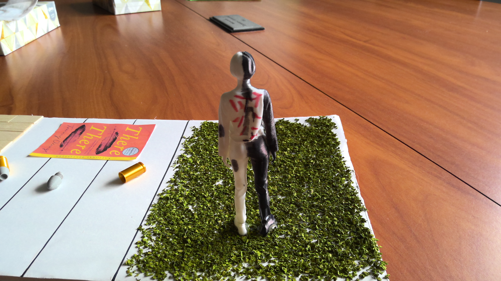

Overview
We are using this figure as a representation of how, in The Woman Warrior, talk-story is used as the bridge between past, present, and future. This figure is left intentionally bare and simple to highlight how people, such as Maxine, are meant to extrapolate the lessons of talk-story onto themselves.
Black and White Coloring
One half of the figure is black, which is an allusion to the story of Fa Mu Lan told within The Woman Warrior. Specifically, this represents how Fa Mu Lan had to hide her identity in order to succeed, and this is a metaphor for the consistent suppression of women as told in the story.
The other side, which is meant to represent everyday people, like Maxine is left mostly white. However, upon closer inspection, you can see there are black dots leaking onto this side as well. This is meant to represent how Maxine is influenced and pressured by talk-story. These stories impose the pressure that she must be a "warrior" of her own.
Carvings on the Back

We included the words carved on Fa Mu Lan's back as a representation of how one must carry the words of their ancestors with them. Like talk-story, these words are meant to guide and influence the person who carries them, but they can also be a burden. This burden is represented by the pain Fa Mu Lan experiences when the words were carved into her back. This is meant to represent how talk-story can be both a source of strength and a source of pressure for Maxine. One such example is the opening line, "You must not tell anyone" which are familial words Maxine must carry forward.